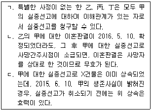
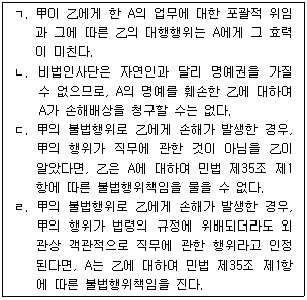
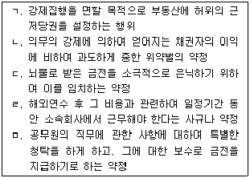
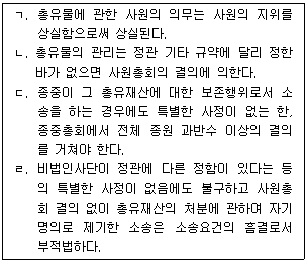
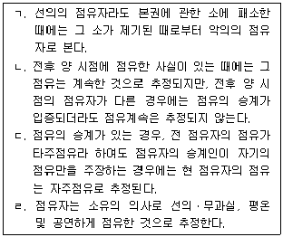
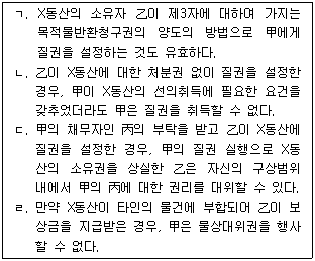
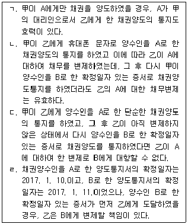

변리사-1차(2교시) (2017-02-25 기출문제)
1. 관습법과 사실인 관습에 관한 설명으로 옳지 않은 것은? (다툼이 있으면 판례에 따름)
- 관습법은 법원(法源)으로서 법령에 저촉되지 않는 한, 법칙으로서의 효력이 있다.
- 미등기 무허가건물의 매수인은 그 소유권이전등기를 경료하지 않으면 건물의 소유권을 취득할 수 없지만, 소유권에 준하는 관습상의 물권이 인정될 수는 있다.
- 종중의 명칭사용이 그에 관한 관습에 어긋난다고 하여도, 그러한 사실만으로 그 종중의 실체를 부인할 수는 없다.
- 사실인 관습은 사적 자치가 인정되는 분야의 제정법이 임의규정인 경우에는 법률행위의 해석기준이 되므로, 이를 재판의 자료로 할 수 있다.
- 제정법규와 배치되는 사실인 관습의 효력을 인정하려면, 그러한 관습을 인정할 수 있는 당사자의 주장과 입증이 있어야 할 뿐만 아니라 그 관습이 임의규정에 관한 것인지 여부를 심리ㆍ판단해야 한다.
(정답률: 알수없음)

2. 甲은 2014. 5. 20. 항공기 추락으로 실종된 후, 2015. 12. 20. 실종선고가 청구되어 2016. 7. 20. 실종선고가 되었다. 甲에게는 가족으로 배우자 乙외에 어머니 丙, 아들 丁이 있었고, 유산으로 X건물을 남겼다. 이에 관한 설명으로 옳지 않은 것을 모두 고른 것은? (다툼이 있으면 판례에 따름)

- ㄱ
- ㄴ
- ㄱ, ㄴ
- ㄴ, ㄷ
- ㄱ, ㄴ, ㄷ
(정답률: 알수없음)
3. 비법인사단인 A종중과 그 대표자 甲, 그리고 乙사이의 법률관계에 관한 설명으로 옳은 것을 모두 고른 것은? (다툼이 있으면 판례에 따름)

- ㄱ
- ㄷ
- ㄱ, ㄴ
- ㄷ, ㄹ
- ㄱ, ㄴ, ㄹ
(정답률: 알수없음)
4. 물건에 관한 설명으로 옳은 것은? (다툼이 있으면 판례에 따름)
- 어떤 토지가 지적공부상 1필의 토지로 등록되면 특별한 사정이 없는 한, 그 경계는 지적도상의 경계에 의하여 특정된다.
- 입목등기를 하지 않은 수목은 명인방법을 갖추더라도 독립된 물건이 될 수 없다.
- 주물 소유자의 사용에 공여되고 있는 물건은 주물 자체의 효용과 관계없는 물건이라도 종물이 된다.
- 성숙한 농작물은 명인방법을 갖추어야 경작자의 소유가 된다.
- 토지등기부에 분필등기가 되면 「공간정보의 구축 및 관리 등에 관한 법률」이 정하는 바에 따른 분할절차를 밟지 않아도 분필의 효과가 발생한다.
(정답률: 알수없음)
5. 민법 제103조의 반사회적 법률행위에 해당하지 않는 것을 모두 고른 것은? (다툼이 있으면 판례에 따름)

- ㄱ, ㄴ, ㄷ
- ㄱ, ㄷ, ㄹ
- ㄴ, ㄹ, ㅁ
- ㄷ, ㄹ, ㅁ
- ㄱ, ㄴ, ㄷ, ㅁ
(정답률: 알수없음)
6. 사기나 강박에 의한 의사표시에 관한 설명으로 옳지 않은 것은? (다툼이 있으면 판례에 따름)
- 민법상의 법률행위에 관한 규정은 특별한 사정이 없는 한 소송행위에는 적용이 없으므로, 소송행위가 강박에 의하여 이루어지더라도 이를 이유로 취소할 수는 없다.
- 매도인의 기망에 의하여 타인 소유의 물건을 매도인의 것으로 알고 매수한 자는 만일 그것이 타인의 물건인 줄 알았더라면 매수하지 아니하였을 사정이 있는 경우, 매도인의 사기를 이유로 매매계약을 취소할 수 있다.
- 상대방의 사기에 속아 신원보증서류에 서명날인한다는 착각에 빠진 상태로 연대보증서면에 서명날인한 경우, 이러한 표시상의 착오에서는 착오 이외에 사기를 이유로도 연대보증계약을 취소할 수 있다.
- 은행 출장소장은 은행 또는 은행과 동일시할 수 있는 자이므로, 그의 사기에 속아 은행과 대출계약을 체결한 사람은 은행이 그 사기사실을 알았거나 알 수 있었을 경우에 한하여 대출계약을 취소할 수 있는 것은 아니다.
- 강박에 의한 법률행위가 동시에 불법행위를 구성하는 경우, 그 취소의 효과로 생기는 부당이득반환청구권과 불법행위로 인한 손해배상청구권은 경합하지만 중첩적으로 행사할 수는 없다.
(정답률: 알수없음)
7. 甲은 乙에게 자기 소유의 아파트에 대하여 매매계약의 체결에 관한 대리권을 수여하였고, 이에 따라 乙은 甲을 위하여 丙과 매매계약을 체결하였다. 이에 관한 설명으로 옳지 않은 것은? (다툼이 있으면 판례에 따름)
- 특별한 사정이 없는 한, 乙은 丙으로부터 중도금이나 잔금을 수령할 권한이 있다.
- 특별한 사정이 없는 한, 乙은 丙에게 약정된 매매대금 지급기일을 연기해 줄 권한은 없다.
- 丙이 甲에 대하여 소유권이전등기를 청구하는 경우, 乙의 대리권 존재 사실에 대한 증명책임은 丙이 진다.
- 만약 乙이 甲을 위한 것임을 표시하지 않고 매매계약을 체결하였는데 乙이 甲의 대리인임을 丙이 알았다면, 그 계약의 효력은 甲에게 미친다.
- 乙이 丙으로부터 받은 매매대금을 유용할 배임적 의도를 갖고 있었고 丙이 이를 알았다면, 그 한도에서 乙은 무권대리가 된다.
(정답률: 알수없음)
8. 甲의 무권대리인 乙은 甲소유의 X토지에 대한 관련 서류를 위조하여 甲의 이름으로 丙과 매매계약을 체결하였다. 乙의 표현대리가 인정되지 않은 경우, 무권대리행위의 추인과 관련된 설명으로 옳지 않은 것은? (다툼이 있으면 판례에 따름)
- 甲은 乙또는 丙을 상대로 매매계약을 추인할 수 있다.
- 甲은 乙의 처분행위와 사문서위조행위를 불문에 붙이기로 합의하는 등 묵시적인 방법으로도 매매계약을 추인할 수 있다.
- 乙이 甲을 단독으로 상속하여 X토지의 소유자가 되면, 乙은 본인의 지위에서 매매계약의 추인을 거절할 수 있다.
- 丙이 매매계약 당시 乙이 무권대리인임을 알지 못하였다면, 丙은 본인의 추인이 있을 때까지 乙을 상대로 매수의 의사표시를 철회할 수 있다.
- 丙이 상당한 기간을 정하여 매매계약의 추인 여부에 대한 확답을 최고하였으나 甲이 그 기간 내에 확답을 발하지 않으면 추인을 거절한 것으로 본다.
(정답률: 알수없음)
9. 민법상의 불공정한 법률행위에 관한 설명으로 옳지 않은 것은? (다툼이 있으면 판례에 따름)
- 궁박, 경솔, 무경험은 모두 구비되어야 하는 요건이 아니라 그 중 일부만 갖추어져도 충분하다.
- 궁박은 경제적인 것에 한정하지 않으며 정신적, 신체적인 원인에 기인하는 것을 포함한다.
- 무경험은 생활체험의 부족을 의미하는 것으로, 거래일반에 대한 경험부족이 아니라 특정영역에 있어서의 경험부족을 의미한다.
- 당사자 중 일방이 상대방의 궁박, 경솔 또는 무경험을 알면서 이를 이용하려는 의사가 있어야 한다.
- 불공정한 법률행위로서 무효인 경우, 추인에 의하여 무효인 법률행위가 유효로 될 수는 없지만, 무효행위의 전환에 관한 민법 제138조는 적용될 수 있다.
(정답률: 알수없음)
10. 민법상 조건부 법률행위에 관한 설명으로 옳지 않은 것은? (다툼이 있으면 판례에 따름)
- 정지조건부 채권양도에 있어서 정지조건이 성취되었다는 사실은 채권양도의 효력을 부정하는 자가 증명해야 한다.
- 어떤 법률행위에 정지조건이 붙어 있는지 여부는 그 조건의 존재를 주장하는 자가 증명해야 한다.
- 조건이 법률행위 당시에 이미 성취할 수 없는 것인 경우에 그 조건이 해제조건이면 조건 없는 법률행위가 된다.
- 조건성취의 효력발생시기에 관한 민법의 규정은 임의규정이다.
- 조건부 법률행위에 있어서 조건의 내용 자체가 불법으로 무효인 경우, 특별한 사정이 없는 한 그 조건만을 분리하여 일부만 무효로 할 수는 없다.
(정답률: 알수없음)
11. 甲은 A호텔에서 2015. 12. 5. 회갑연을 하고, 당일 지급하기로 한 3천만원의 음식료 채무를 그의 친구 乙과 연대하여 부담하기로 약정하였다. A호텔이 2016. 11. 21. 3천만원을 받기 위하여 甲을 상대로 이행청구의 소를 제기하였다. 다음 설명 중 옳지 않은 것은? (다툼이 있으면 판례에 따름)
- A호텔의 음식료 채권은 1년의 소멸시효에 걸린다.
- 소멸시효가 완성되기 전에 A호텔이 소를 제기했으므로, 소멸시효의 진행이 중단된다.
- A호텔이 소송을 취하하면 소멸시효 중단의 효력은 없으나, 6개월 내에 가압류를 하면 최초의 재판상 청구로 인하여 소멸시효가 중단된 것으로 본다.
- A호텔의 청구에 대하여 기각판결이 확정된 후, A호텔이 재심을 청구하면 소멸시효의 진행이 중단된다.
- A호텔의 재판상 청구로 인한 소멸시효 중단의 효력은 乙에게도 미친다.
(정답률: 알수없음)
12. 소멸시효에 관한 설명으로 옳은 것은?
- 재산을 관리하는 후견인에 대한 제한능력자의 권리는 그가 능력자가 된 때로부터 6개월 내에는 소멸시효가 완성되지 아니한다.
- 채권자가 채무자를 상대로 법원에 신청한 화해가 불성립되어 채권자가 그로부터 1월내에 소를 제기한 경우, 채권의 소멸시효는 소제기 시부터 중단된다.
- 소멸시효의 기간만료 전 1년 내에 제한능력자에게 법정대리인이 없는 경우, 그가 능력자가 되거나 법정대리인이 취임한 때로부터 1년 내에는 소멸시효가 완성되지 아니한다.
- 상속재산에 대한 권리는 상속인의 확정, 관리인의 선임 또는 파산선고가 있는 때로부터 1년 내에는 소멸시효가 완성되지 아니한다.
- 채무자가 시효중단의 효력이 있는 승인을 하려면 채권자의 채권에 관한 처분의 능력이나 권한이 있어야 한다.
(정답률: 알수없음)
13. 점유취득시효에 관한 설명으로 옳지 않은 것은? (다툼이 있으면 판례에 따름)
- 자연인이나 법인뿐만 아니라 권리능력 없는 사단도 시효취득의 주체가 될 수 있다.
- 취득시효 완성으로 인한 소유권취득의 효력은 점유를 개시한 때에 소급한다.
- 토지에 대한 취득시효가 완성된 후 토지소유자가 그 토지 위에 담장을 설치한 경우, 시효완성자는 소유권에 기한 방해배제청구권의 행사로서 토지소유자를 상대로 담장의 철거를 청구할 수 없다.
- 취득시효기간의 완성 전에 등기부상의 소유명의가 변경되었다 하더라도 이는 취득시효의 중단사유가 될 수 없다.
- 미등기 부동산의 경우, 점유자가 취득시효기간의 완성만으로 등기 없이 소유권을 취득한다.
(정답률: 알수없음)
14. 총유에 관한 설명으로 옳은 것을 모두 고른 것은? (다툼이 있으면 판례에 따름)

- ㄱ, ㄷ
- ㄱ, ㄴ, ㄹ
- ㄱ, ㄷ, ㄹ
- ㄴ, ㄷ, ㄹ
- ㄱ, ㄴ, ㄷ, ㄹ
(정답률: 알수없음)
15. 전세권에 관한 설명으로 옳지 않은 것은? (다툼이 있으면 판례에 따름)
- 전세권설정자가 전세권자에 대하여 민법 제315조에 정한 손해배상채권 이외의 다른 채권을 가지고 있더라도 특별한 사정이 없는 한, 이를 가지고 전세금반환채권에 대하여 물상대위권을 행사한 전세권저당권자에게 상계로 대항할 수 없다.
- X건물에 대해 1순위 저당권자 甲, 2순위 전세권자 乙, 3순위 저당권자 丙이 있고 그 중 丙이 경매신청을 하여 丁에게 매각된 경우, 乙의 전세권은 소멸하되 2순위로 우선변제권을 가진다.
- 타인의 토지에 있는 건물에 전세권을 설정한 경우, 전세권의 효력은 그 건물의 소유를 목적으로 한 지상권에 미친다.
- 지상권을 가진 건물소유자가 그 건물에 전세권을 설정하였으나 그가 2년 이상의 지료를 지급하지 아니한 경우, 토지소유자는 전세권자의 동의 없이 지상권 소멸청구를 할 수 없다.
- 전세권에 저당권이 설정되어 있는 경우에도 전세권의 존속기간이 만료되면 전세권의 용익물권적 권능은 전세권설정등기의 말소등기 없이도 당연히 소멸한다.
(정답률: 알수없음)
16. 점유의 추정에 관한 설명으로 옳은 것을 모두 고른 것은? (다툼이 있으면 판례에 따름)

- ㄱ, ㄴ
- ㄱ, ㄷ
- ㄷ, ㄹ
- ㄱ, ㄷ, ㄹ
- ㄴ, ㄷ, ㄹ
(정답률: 알수없음)
17. 부동산 물권변동에 관한 설명으로 옳지 않은 것은? (다툼이 있으면 판례에 따름)
- 소유권이전등기청구소송에서 승소판결이 확정된 경우에도 등기하여야 소유권을 취득한다.
- 전세권이 법정갱신된 경우, 전세권자는 등기 없이도 전세권설정자나 그 목적물을 취득한 제3자에 대하여 갱신된 권리를 주장할 수 있다.
- 신축건물의 보존등기를 건물 완성 전에 하였더라도 그 후 건물이 완성된 이상 그 등기는 무효가 아니다.
- 무허가건물의 신축자는 등기 없이 소유권을 원시취득하지만 이를 양도하는 경우에는 등기 없이 인도에 의하여 소유권을 이전할 수 없다.
- 공유물분할의 소에서 공유부동산의 특정한 일부씩을 각각의 공유자에게 귀속시키는 것으로 현물분할하는 내용의 조정이 성립하였다면, 그 조정이 성립한 때 물권변동의 효력이 발생한다.
(정답률: 알수없음)
18. 등기의 추정력에 관한 설명으로 옳지 않은 것은? (다툼이 있으면 판례에 따름)
- 소유권이전등기가 경료되어 있는 경우, 그 등기명의자는 제3자에 대하여서뿐만 아니라 그 전 소유자에 대하여서도 적법한 등기원인에 의하여 소유권을 취득한 것으로 추정된다.
- 허무인으로부터 등기를 이어받은 소유권이전등기는 원인무효이므로 그 등기명의 자에 대한 소유권추정은 깨어진다.
- 소유권이전등기의 원인으로 주장된 계약서가 진정하지 않은 것으로 증명된 경우에도 등기는 적법한 것으로 추정된다.
- 등기가 원인 없이 말소된 경우에는 그 회복등기가 마쳐지기 전이라도 말소된 등기의 등기명의인은 적법한 권리자로 추정된다.
- 신축된 건물의 소유권은 이를 건축한 사람이 원시취득하는 것이므로, 건물소유권 보존등기의 명의자가 이를 신축한 것이 아니라면 그 등기의 권리추정력은 깨어진다.
(정답률: 알수없음)
19. 저당권에 관한 설명으로 옳지 않은 것은? (다툼이 있으면 판례에 따름)
- 피담보채권을 저당권과 함께 양수한 자는 저당권 이전의 부기등기를 마치고 저당권실행의 요건을 갖추고 있는 한 채권양도의 대항요건을 갖추고 있지 아니하더라도 경매신청을 할 수 있다.
- 저당권설정자로부터 저당토지에 용익권을 설정 받은 자가 그 토지에 건물을 축조한 경우라도 그 후 저당권설정자가 그 건물의 소유권을 취득하였다면, 저당권자는 토지와 함께 그 건물에 대하여 경매를 신청할 수 있다.
- 피담보채권이 저당권과 분리되어 양도된 경우, 채권의 처분에 따르지 않는 저당권은 소멸한다.
- 저당부동산에 대하여 지상권을 취득한 제3자는 채무자의 의사에 반하여 저당권자에게 그 부동산으로 담보된 채권을 변제하고 저당권의 소멸을 청구할 수 있다.
- 저당권의 효력은 저당부동산에 대한 압류가 없더라도 저당권설정자가 그 부동산으로부터 수취한 과실 또는 수취할 수 있는 과실에 미친다.
(정답률: 알수없음)
20. 甲이 채무자 乙소유인 X토지에 대하여 채무불이행을 이유로 채권최고액 1천만원의 근저당권을 실행하기 위한 경매를 신청하였다. 이에 관한 설명으로 옳지 않은 것은? (다툼이 있으면 판례에 따름)
- 경매개시결정이 있은 후, 甲이 경매신청을 취하하였다면 채무확정의 효과는 번복된다.
- 甲의 경매신청 시에 근저당권이 확정되므로, 그 이후에 발생하는 甲의 원본채권은 근저당으로 담보되지 않는다.
- 근저당권의 실행에 따른 경매비용은 채권최고액 1천만원에 포함되지 아니한다.
- 甲의 피담보채권이 확정되기 전에 발생한 원본채권에 관하여 그 확정 후에 발생하는 원본채권의 이자나 지연손해금은 채권최고액의 범위 내에서는 근저당권에 의하여 담보된다.
- 만일 X토지에 대하여 후순위 저당권을 취득한 丙이 경매를 신청한 경우에는 그 매각대금 완납 시에 甲의 피담보채권액이 확정된다.
(정답률: 알수없음)
21. 지역권에 관한 설명으로 옳은 것은? (다툼이 있으면 판례에 따름)
- 지역권은 다른 약정이 없는 한 승역지소유권에 부종하여 이전한다.
- 계약에 의하여 승역지소유자가 자기의 비용으로 지역권의 행사를 위하여 공작물의 설치 또는 수선의 의무를 부담하기로 한 경우, 위 약정으로 승역지소유자의 특별승계인에게 대항하기 위해서는 등기를 하여야 한다.
- 통행지역권을 시효취득하기 위해서는 요역지의 소유자가 타인의 토지를 20년간 통행하였다는 사실만으로 충분하며, 요역지의 소유자가 타인의 소유인 승역지위에 통로를 개설할 필요는 없다.
- 요역지의 공유자 중 1인이 지역권을 시효로 취득하더라도 다른 공유자는 지역권을 취득하지 못한다.
- 승역지는 반드시 1필의 토지이어야 하며, 토지의 일부 위에 지역권을 설정할 수 없다.
(정답률: 알수없음)
22. 비전형담보에 관한 설명 중 옳지 않은 것은? (다툼이 있으면 판례에 따름)
- 채권자와 채무자가 가등기담보권설정계약을 체결함에 있어 가등기 이후에 발생될 채무도 피담보채무의 범위에 포함시키기로 한 약정은 유효하다.
- 가등기가 금전소비대차에 기한 차용금반환채무와 그 외의 원인으로 발생한 채무를 동시에 담보할 목적으로 경료되었으나 그 후 금전소비대차에 기한 차용금반환채무만이 남게 된 경우, 그 가등기담보에 「가등기담보 등에 관한 법률」이 적용된다.
- 양도담보 목적물이 소실되어 양도담보 설정자가 보험회사에 대하여 화재보험계약에 따른 보험금청구권을 취득한 경우, 양도담보권자는 위 보험금청구권에 대하여 양도담보권에 기한 물상대위권을 행사할 수 있다.
- 양도담보권자는 사용ㆍ수익할 수 있는 정당한 권한이 있는 채무자나 그 채무자로부터 사용ㆍ수익할 수 있는 권한을 승계한 자에 대하여 그 사용ㆍ수익을 하지 못한 것을 이유로 임료 상당의 손해배상이나 부당이득반환을 청구할 수 있다.
- 채무자가 채무를 변제하고 가등기말소를 구하는 경우, 채무변제와 담보가등기말소는 동시이행관계가 아니라 채무변제가 선이행의무이다.
(정답률: 알수없음)
23. 甲은 자신의 채권담보를 위해 乙로부터 X동산에 질권을 설정받아 이를 점유하고 있다. 이에 관한 설명으로 옳은 것을 모두 고른 것은? (다툼이 있으면 판례에 따름)

- ㄱ, ㄴ
- ㄱ, ㄹ
- ㄴ, ㄷ
- ㄱ, ㄷ, ㄹ
- ㄴ, ㄷ, ㄹ
(정답률: 알수없음)
24. 민사유치권에 관한 설명으로 옳지 않은 것은? (다툼이 있으면 판례에 따름)
- 특별한 사정이 없는 한, 간접점유는 유치권의 성립요건이자 존속요건인 점유에 해당한다.
- 건축자재공급업자가 건물 신축공사 수급인과 체결한 자재공급계약에 따라 건축자재를 공급한 경우, 자재공급업자는 자재대금을 피담보채권으로 하여 건물에 대한 유치권을 행사할 수 없다.
- 유치권에 의한 경매절차가 정지된 상태에서 그 목적물에 대한 담보권실행을 위한 경매가 진행되어 매각이 이루어지게 되면 그 유치권은 소멸한다.
- 유치권자로부터 유치물을 유치하기 위한 방법으로 유치물의 점유를 위탁받은 자는 특별한 사정이 없는 한 점유할 권리가 있음을 들어 소유자의 소유물반환청구를 거부할 수 있다.
- 건물신축공사를 도급받은 수급인은 사회통념상 독립한 건물이 되지 못한 정착물을 토지에 설치한 상태에서 공사가 중단된 경우, 위 정착물에 대하여 유치권을 행사할 수 없다.
(정답률: 알수없음)
25. 채무불이행에 관한 설명으로 옳지 않은 것은? (다툼이 있으면 판례에 따름)
- 매매계약 당시 매매목적 토지의 소유권이 매도인에게 속하지 아니함을 알고 있던 매수인은 소유권이전의무의 이행불능에 매도인의 귀책사유가 있더라도 채무불이행을 이유로 계약을 해제하고 손해배상을 청구할 수 없다.
- 이행보증계약에 기한 보증인의 보증금지급의무에 관하여 지급금지가처분결정이 있었다고 하더라도, 이로써 보증인에게 지급거절의 권능이 발생한다고 할 수 없다.
- 매매의 대상인 권리가 타인에게 귀속되어 있다는 이유만으로 채무자의 계약에 따른 이행이 불능이라고 할 수는 없다.
- 부당이득반환의무는 이행기한의 정함이 없는 채무이므로 그 채무자는 이행청구를 받은 그 다음 날부터 지체책임을 진다.
- 채무자가 채무 발생원인 내지 존재에 관한 잘못된 법률적 판단을 통하여 자신의 채무가 없다고 믿고 채무이행을 거부한 채 소송을 통하여 다툰 경우, 특별한 사정이 없는 한 채무불이행에 관하여 채무자에게 고의나 과실이 인정된다.
(정답률: 알수없음)
26. 손해배상에 관한 설명으로 옳지 않은 것은? (다툼이 있으면 판례에 따름)
- 계약 당시 당사자 사이에 손해배상액을 예정하는 내용의 약정이 있는 경우, 특별한 사정이 없는 한 위 약정은 그 계약과 관련된 불법행위책임에 따른 손해배상까지 예정한 것이라고는 볼 수 없다.
- 채권자가 그 채권의 목적인 물건 또는 권리의 가액전부를 손해배상으로 받은 때에는 채무자는 그 물건 또는 권리에 관하여 당연히 채권자를 대위한다.
- 숙박업자가 숙박계약상의 고객보호의무를 다하지 못하여 투숙객이 사망한 경우, 그 투숙객의 근친자가 그 사고로 인하여 정신적 고통을 받았다면, 숙박계약의 당사자가 아닌 그 근친자는 숙박업자의 그 망인에 대한 숙박계약상의 채무불이행을 이유로 위자료를 청구할 수 있다.
- 피용자의 고의에 의한 불법행위로 인하여 사용자가 사용자책임을 부담하는 경우, 사용자책임의 범위를 정함에 있어서 피해자의 과실을 고려하여 그 책임을 제한할 수 있다.
- 과실상계는 매매계약이 해제되어 원상회복의무의 이행으로서 이미 지급한 매매대금 기타 급부의 반환을 구하는 경우에는 적용되지 않는다.
(정답률: 알수없음)
27. 채권자대위권에 관한 설명으로 옳은 것은? (다툼이 있으면 판례에 따름)
- 채권자대위소송에서 제3채무자로 하여금 직접 대위채권자에게 금전의 지급을 명하는 판결이 확정된 경우, 피대위채권이 변제 등으로 소멸하기 전이라면 채무자의 다른 채권자가 이를 압류 또는 가압류할 수 있다.
- 채권자대위소송에서 제3채무자는 채권자의 채무자에 대한 권리의 발생원인이 된 법률행위가 무효라거나 변제 등으로 소멸하였다는 등의 사실을 주장하여 채권자의 채무자에 대한 권리가 인정되는지를 다툴 수 없다.
- 토지거래허가구역에 있는 토지의 매수인은 채권보전의 필요성 여부와 무관하게 토지거래허가 신청절차의 협력의무 이행청구권을 보전하기 위하여 매도인의 권리를 대위하여 행사할 수 있다.
- 이행인수 약정이 체결된 경우, 채무자는 인수인이 그 채무를 이행하지 아니하면 인수인에 대하여 채권자에게 이행할 것을 청구할 수 있으나, 채무자의 인수인에 대한 위 청구권을 채권자가 대위행사할 수 없다.
- 지하도상가 내 점포의 사용청구권을 가지는 자는 상가의 소유자인 시(市)가 불법점유자들에 대하여 가지는 점포의 인도청구권을 대위행사할 수 없다.
(정답률: 알수없음)
28. 채권자취소권에 관한 설명으로 옳지 않은 것은? (다툼이 있으면 판례에 따름)
- 채권자가 수익자를 상대로 사해행위 취소 및 원상회복으로 소유권이전등기의 말소를 명하는 판결을 받았으나 말소등기를 마치지 않은 경우, 소송당사자가 아닌 다른 채권자가 위 판결에 따라 채무자를 대위하여 마친 말소등기는 등기절차상의 흠에도 불구하고 실체관계에 부합하는 등기로서 유효하다.
- 채권자의 채권이 사해행위 이전에 성립한 이상 사해행위 이후에 양도되었다고 하더라도 양수인의 채권은 채권자취소권의 피보전채권이 될 수 있다.
- 주채무의 전액에 관하여 물상보증인의 담보로 채권자의 우선변제권이 확보되어 있다면, 연대보증인이 유일한 재산을 처분하였더라도 사해행위가 되지 않는다.
- 채무자의 수익자에 대한 채권양도가 사해행위로 취소되고, 그에 따른 원상회복으로서 제3채무자에게 채권양도가 취소되었다는 취지의 통지가 이루어진 경우, 채권자는 채무자를 대위하여 제3채무자에게 채권에 관한 지급을 청구할 수 있다.
- 채권자가 채무자의 채권자취소권을 대위행사하는 경우, 채권자취소권을 대위행사하는 채권자가 취소원인을 안 지 1년이 경과하였다고 하더라도 채무자가 취소원인을 안 날로부터 1년, 법률행위가 있은 날로부터 5년 내라면 채권자취소의소를 제기할 수 있다.
(정답률: 알수없음)
29. 甲은 乙에게 1천만원의 채무를 지고 있고, 이러한 甲의 채무에 대하여 丙이 연대보증을 하였다. 이에 관한 설명으로 옳은 것은? (다툼이 있으면 판례에 따름)
- 甲이 1천만원의 채무에 대한 소멸시효 기간이 경과한 후 시효의 이익을 포기한 경우, 丙은 소멸시효를 원용하여 연대보증채무의 소멸을 주장할 수 없다.
- 甲이 乙에게 8백만원의 채권을 가지고 있는 경우, 丙은 5백만원의 한도 내에서만 상계를 할 수 있다.
- 乙이 甲에 대한 채권을 丁에게 양도하고 확정일자 있는 증서로 甲에게 통지한 경우, 乙이 丙에게 보증채권 양도의 통지를 해야 丙에 대한 채권이 丁에게 이전 된다.
- 乙의 甲에 대한 채권에 시효중단 사유가 발생한 경우, 丙에게 통지 등 별도의 중단조치를 하지 않아도 丙에게 시효중단의 효력이 미친다.
- 甲의 채무가 본래 단기소멸시효에 걸리는 것이었지만 확정판결에 의해 소멸시효기간이 10년으로 연장된 경우, 丙의 보증채무도 10년의 소멸시효기간이 적용된다.
(정답률: 알수없음)
30. 甲은 2016. 1. 5. 乙에게 1억원을 대여하였고, 그 후 A 또는 B에게 자신의 채권을 양도하였다. 이에 관한 설명으로 옳은 것을 모두 고른 것은? (다툼이 있으면 판례에 따름)

- ㄱ
- ㄴ, ㄹ
- ㄱ, ㄷ, ㄹ
- ㄴ, ㄷ, ㄹ
- ㄱ, ㄴ, ㄷ, ㄹ
(정답률: 알수없음)
31. 채무인수 등에 관한 설명으로 옳은 것은? (다툼이 있으면 판례에 따름)
- 이행인수인은 법정대위를 할 수 있는 변제할 정당한 이익이 있는 자에 해당하지 않는다.
- 채권자와 보증인 사이에 보증인이 주채무를 중첩적으로 인수하기로 약정한 경우, 특별한 사정이 없는 한 보증인은 주채무자에 대한 관계에서는 종전의 보증인의 지위를 그대로 유지한다.
- 부동산 매수인이 매매목적물에 설정된 근저당권의 피담보채무를 이행인수한 뒤 그 변제를 게을리 하여 근저당권이 실행됨으로써 매도인이 매매목적물에 대한 소유권을 상실한 경우, 이는 매수인의 책임 있는 사유로 소유권이전등기의무가 이행불능으로 된 경우에 해당하고 그에 대하여 매도인의 과실도 인정된다.
- 계약당사자로서의 지위가 제3자에게 이전되는 경우, 계약상 지위를 전제로 한 권리관계가 이전될 뿐만 아니라 불법행위에 기한 손해배상청구권도 별도의 채권양도절차 없이 제3자에게 당연히 이전된다.
- 채무자와 인수인의 합의에 의한 중첩적 채무인수의 경우, 채권자의 수익의 의사표시는 계약의 성립요건이 아니라 효력발생요건이다.
(정답률: 알수없음)
32. 甲과 乙은 상호간에 각 1억원의 대여금채권을 가지고 있었는데, 그 후 甲의 채권자 丙이 甲의 乙에 대한 채권을 가압류하였다. 이러한 상태에서 乙은 상계를 하고자 한다. 다음 설명 중 옳지 않은 것은? (다툼이 있으면 판례에 따름)
- 가압류의 효력 발생 당시 乙의 채권과 甲의 채권의 변제기가 모두 도래한 경우, 乙은 상계로써 丙에게 대항할 수 있다.
- 가압류 효력발생 당시 乙의 채권이 변제기에 도달하지 않은 경우, 乙의 채권의 변제기가 甲의 채권의 변제기와 동시에 도래하면, 乙은 상계로써 丙에게 대항할 수 있다.
- 가압류의 효력발생 당시 乙의 채권이 변제기에 도달하지 않은 경우, 甲의 채권의 변제기 후에 乙의 채권이 변제기에 도달하더라도 乙은 상계로써 丙에게 대항할 수 있다.
- 가압류 효력발생 당시 乙의 채권이 변제기에 도달하지 않은 경우, 乙의 채권의 변제기가 甲의 채권의 변제기보다 먼저 도래하면 乙은 상계로써 丙에게 대항할 수 있다.
- 가압류 효력발생 당시 비록 甲과 乙의 채권이 변제기에 도달하였더라도 乙이 甲에 대하여 상계의 의사표시를 하지 않은 경우, 특별한 사정이 없는 한 乙은 상계로써 丙에게 대항할 수 없다.
(정답률: 알수없음)
33. 甲은 물품보관창고를 필요로 하는 乙의 요청에 따라 그 소유의 X토지를 乙에게 임대함과 동시에 그 지상에 신축한 미등기 Y건물을 乙에게 매도하였고, 그 후 乙은 Y건물에 대한 보존등기를 마쳤다. 다음 설명 중 옳은 것은? (다툼이 있으면 판례에 따름)
- 乙의 차임채무불이행으로 임대차가 종료되어도 乙은 甲에게 Y건물의 매수를 청구할 수 있다.
- 乙이 적법하게 Y건물의 매수를 청구한 경우, 甲의 대금지급의무는 乙의 Y건물명도 및 소유권이전의무보다 선이행되어야 한다.
- 乙이 Y건물에 대한 보존등기를 마친 후 甲이 丙에게 X토지를 매도하고 소유권 이전등기를 마쳐 준 경우, 乙의 임차권이 기간만료로 소멸하면 乙은 丙을 상대로 Y건물의 매수를 청구할 수 없다.
- 만약 乙의 채권자 명의로 근저당권이 설정된 Y건물에 대하여 乙이 적법하게 매수청구권을 행사한 경우, 甲은 근저당권이 말소되지 않았음을 이유로 채권최고액에 상당한 대금의 지급을 거절할 수 없다.
- 만약 Y건물이 미등기 상태에 있더라도 임대차기간이 만료되어 乙이 적법하게 매수청구권을 행사한 경우, Y건물은 그 매수청구의 대상이 될 수 있다.
(정답률: 알수없음)
34. 乙은 甲소유의 X주택을 매수하면서 그 대금을 甲의 대여금 채권자 丙에게 지급하기로 하는 제3자를 위한 계약을 체결하였고, 丙은 위 매매대금의 수령의사를 밝혔다. 다음 설명 중 옳지 않은 것은? (다툼이 있으면 판례에 따름)
- X주택의 소유권이전의무가 甲의 과실로 이행불능이 된 경우, 乙은 丙의 동의 없이 매매계약을 해제할 수 있다.
- 甲과 丙간의 금전소비대차계약이 취소되더라도 甲과 乙간의 매매계약은 유효하다.
- 甲과 乙간의 매매계약이 乙의 사기를 이유로 취소된 경우, 丙이 그 사실을 몰랐더라도 丙은 선의의 제3자로서 보호받지 못한다.
- 만약 丙이 甲의 대리인으로서 乙을 기망하여 乙이 위 매매계약을 체결한 경우, 乙은 丙의 대금지급청구를 거절할 수 있을 뿐이고 위 매매계약을 취소할 수는 없다.
- 甲의 채무불이행으로 위 매매계약이 해제된 경우, 乙이 丙에게 매매대금의 일부를 이미 지급하였더라도, 특별한 사정이 없는 한 乙은 丙을 상대로 부당이득을 원인으로 이미 지급한 대금의 반환을 청구할 수 없다.
(정답률: 알수없음)
35. 2015. 2. 5. 甲은 乙에게 자신 소유의 X주택을 대금 1억원에 매도하면서 계약금 1천만원을 수령하였고, 중도금 7천만원은 2015. 2. 25. X주택의 소유권 이전에 필요한 서류 일체를 교부함과 동시에 지급받기로 하였으며, 잔금 2천만원은 2015. 3. 5. 지급받기로 하였다. 2015. 2. 25. 乙이 중도금을 지급하고 자신의 명의로 X주택의 소유권이전등기를 마쳤으나, 2015. 4. 15. 甲은 乙의 잔금 미지급을 이유로 위 매매계약을 적법하게 해제하였다. 다음 설명 중 옳은 것은? (다툼이 있으면 판례에 따름)
- 만약 계약 당시 乙이 계약금 5백만원을 지급하였더라도 계약의 이행 착수 전이라면, 甲은 1천만원을 상환하고 위 매매계약을 해제할 수 있다.
- 甲의 채권자 丙이 2015. 2. 15. 甲의 잔대금 채권을 가압류한 경우라면, 丙은 민법 제548조 제1항 단서에 의해 보호받을 수 있는 제3자에 해당한다.
- 2015. 3. 1. 丁이 乙과 X주택에 대하여 매매예약을 하고 그에 기해 소유권이전등기청구권 보전을 위한 가등기를 마쳤다면, 위 매매계약의 해제에도 불구하고 丁은 매매예약에 기한 본등기를 할 수 있다.
- 乙명의의 등기말소 전인 2015. 4. 20. 乙로부터 X주택의 일부를 임차하여 주택임대차보호법상 대항력을 갖춘 임차인은 위 매매계약이 해제된 사실을 알고 있었더라도 X주택에 대한 甲의 명도청구에 대항할 수 있다.
- X주택을 사용한 乙이 계약의 해제로 이를 甲에게 반환하는 경우, X주택이 乙의 사용으로 인해 훼손되었다고 볼 수 없는 경우에도 그 사용이익 외에 감가상각비를 별도로 산정하여 반환하여야 한다.
(정답률: 알수없음)
36. 甲은 영업공간을 제공하고, 乙과 丙은 각 1억원을 출자하여 A식당을 공동운영하기로 하는 조합계약을 체결하였다. 다음 설명 중 옳은 것은? (다툼이 있으면 판례에 따름)
- 乙이 출자를 지연한 때에는 연체이자를 지급하면 되고, 그 외에 손해까지 배상할 필요는 없다.
- 乙의 채권자는 특별한 사정이 없는 한, 乙을 집행채무자로 하여 A식당의 채권에 대하여 강제집행을 할 수 있다.
- 현물을 출자한 甲이 동업에서 탈퇴하게 되면, 甲의 지분은 금전으로 반환할 수 없다.
- 甲은 동업자로서의 지위를 유지한 채 전체 지분을 제3자에게 처분할 수도 있다.
- A식당이 영업이익으로 구입한 부동산에 대하여 합유등기를 하지 않고 甲명의 로 소유권이전등기를 하였다면, 이는 A식당이 甲에게 명의신탁한 것으로 보아야 한다.
(정답률: 알수없음)
37. 사무관리에 관한 설명으로 옳지 않은 것은? (다툼이 있으면 판례에 따름)
- 사무처리의 긴급성 등으로 국가의 사무에 대하여 사인의 개입이 정당화되는 경우, 사인은 국가의 사무를 처리하면서 지출한 필요비를 청구할 수 있으나 유익비의 상환을 청구할 수는 없다.
- 관리인이 본인에게 인도할 금전을 자기를 위하여 소비한 때에는 소비한 날 이후의 이자뿐만 아니라 그에 따른 손해까지 배상하여야 한다.
- 관리자가 타인의 명예에 대한 급박한 위해를 면하게 하기 위하여 그 사무를 관리한 경우, 그의 경과실로 인하여 본인에게 손해가 발생하여도 그에 따른 손해배상책임을 지지 않는다.
- 관리자가 사무관리를 함에 있어서 과실 없이 손해를 받은 때에는 본인의 현존이익의 한도에서 그 손해의 보상을 청구할 수 있다.
- 타인을 위하여 사무를 처리하는 의사는 관리자 자신의 이익을 위한 의사와 병존할 수 있다.
(정답률: 알수없음)
38. 甲과 乙은 과실에 의한 공동불법행위자로서 丙에게 5천만원의 손해를 입혔다. 이 손해의 발생에 丙의 과실은 30%로 평가되었고, 甲과 乙사이의 과실비율은 7:3이었다. 이에 관한 설명으로 옳지 않은 것은? (다툼이 있으면 판례에 따름)
- 甲과 乙은 丙에 대하여 3천 5백만원의 손해배상채무를 부담한다.
- 甲이 丙에 대한 대여금채권을 자동채권으로 하여 2천만원을 상계한 경우, 乙은 丙에 대하여 4백 5십만원의 손해배상채무를 부담하게 된다.
- 甲이 丙에게 손해배상채무를 전액 배상한 경우, 甲의 乙에 대한 구상채권의 소멸시효는 10년으로 완성되고, 그 기산점은 甲이 현실로 丙에게 손해배상금을 지급한 때이다.
- 甲이 丙에게 1천만원을 배상한 경우, 甲은 乙에 대하여 구상할 수 없다.
- 甲의 보증인 丁이 丙에 대하여 손해배상채무를 변제한 경우, 丁은 乙에게 乙의 부담부분에 한하여 구상권을 행사할 수 있다.
(정답률: 알수없음)
39. 임차인에게 불리한 약정을 하여도 그 효력이 인정되는 것은?
- 토지임차인의 지상물매수청구권
- 임차인의 비용상환청구권
- 임차인의 차임감액청구권
- 임대차기간의 약정이 없는 임차인의 해지통고
- 임차인의 차임연체로 인한 임대인의 해지권
(정답률: 알수없음)
40. 약관에 관한 설명으로 옳은 것은? (다툼이 있으면 판례에 따름)
- 사업자와 고객 사이에 교섭이 이루어진 약관 조항도 「약관의 규제에 관한 법률」에 정한 약관에 해당한다.
- 약관조항이 무효로 되면, 민법상 일부무효의 법리에 따라 그 전부를 무효로 함이 원칙이다.
- 약관에 정하여진 사항이 거래상 일반적이고 공통된 것이어서 고객이 별도의 설명 없이도 충분히 예상할 수 있었던 사항이더라도, 사업자에게 명시ㆍ설명 의무가 있다.
- 사업자가 고객의 대리인과 계약을 체결하는 경우, 설명의무의 상대방이 계약자 본인에 국한되는 것은 아니므로 그 대리인에게 약관을 설명하는 것으로 충분하다.
- 동일한 약관집 내의 대다수의 조항들이 교섭되고 변경된 사정이 있다고 하더라도, 변경되지 아니한 나머지 소수의 조항들에 대해서 교섭이 이루어진 것으로 추정할 수는 없다.
(정답률: 알수없음)